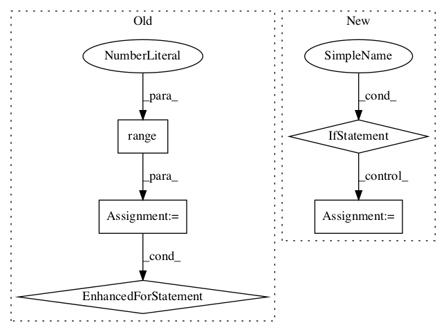

8cdbb1637b140c01f431831e7b2c2a63afc96209,kapre/time_frequency.py,Spectrogram,call,#Spectrogram#Any#,139

Before Change
def call(self, x):
output = self._spectrogram_mono(x[:, 0:1, :])
if self.is_mono is False:
for ch_idx in range(1, self.n_ch):
output = K.concatenate(
(output, self._spectrogram_mono(x[:, ch_idx : ch_idx + 1, :])),
axis=self.ch_axis_idx,
)
if self.power_spectrogram != 2.0:
output = K.pow(K.sqrt(output), self.power_spectrogram)
if self.return_decibel_spectrogram:
output = backend_keras.amplitude_to_decibel(output)
After Change
name="%s_tf.signal.stft" % self.name,
) // (batch, ch, time, freq)
if self.output_data_format == "channels_last":
stfts = tf.transpose(stfts, perm=(0, 2, 3, 1)) // (batch, t, f, ch)
return stfts
def get_config(self):
config = super(STFT, self).get_config()
In pattern: SUPERPATTERN
Frequency: 4
Non-data size: 5
Instances
Project Name: keunwoochoi/kapre
Commit Name: 8cdbb1637b140c01f431831e7b2c2a63afc96209
Time:
Author: null
File Name: kapre/time_frequency.py
Class Name: Spectrogram
Method Name: call
Project Name: tensorflow/agents
Commit Name: c611d9b6b35e44326bc18096dc57abe18eb6c90b
Time:
Author: null
File Name: tf_agents/replay_buffers/tf_uniform_replay_buffer_test.py
Class Name: TFUniformReplayBufferTest
Method Name: testMultiStepStackedSampling
Project Name: tensorflow/agents
Commit Name: c611d9b6b35e44326bc18096dc57abe18eb6c90b
Time:
Author: null
File Name: tf_agents/replay_buffers/tf_uniform_replay_buffer_test.py
Class Name: TFUniformReplayBufferTest
Method Name: testMultiStepStackedBatchedSampling
Project Name: tensorflow/agents
Commit Name: c611d9b6b35e44326bc18096dc57abe18eb6c90b
Time:
Author: null
File Name: tf_agents/replay_buffers/tf_uniform_replay_buffer_test.py
Class Name: TFUniformReplayBufferTest
Method Name: testMultiStepSampling